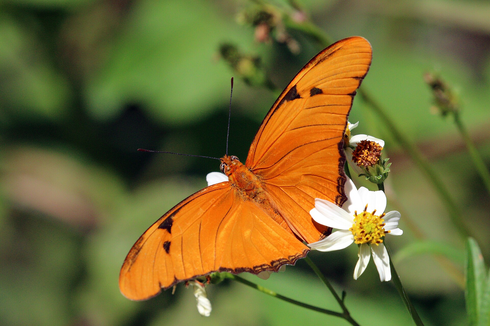
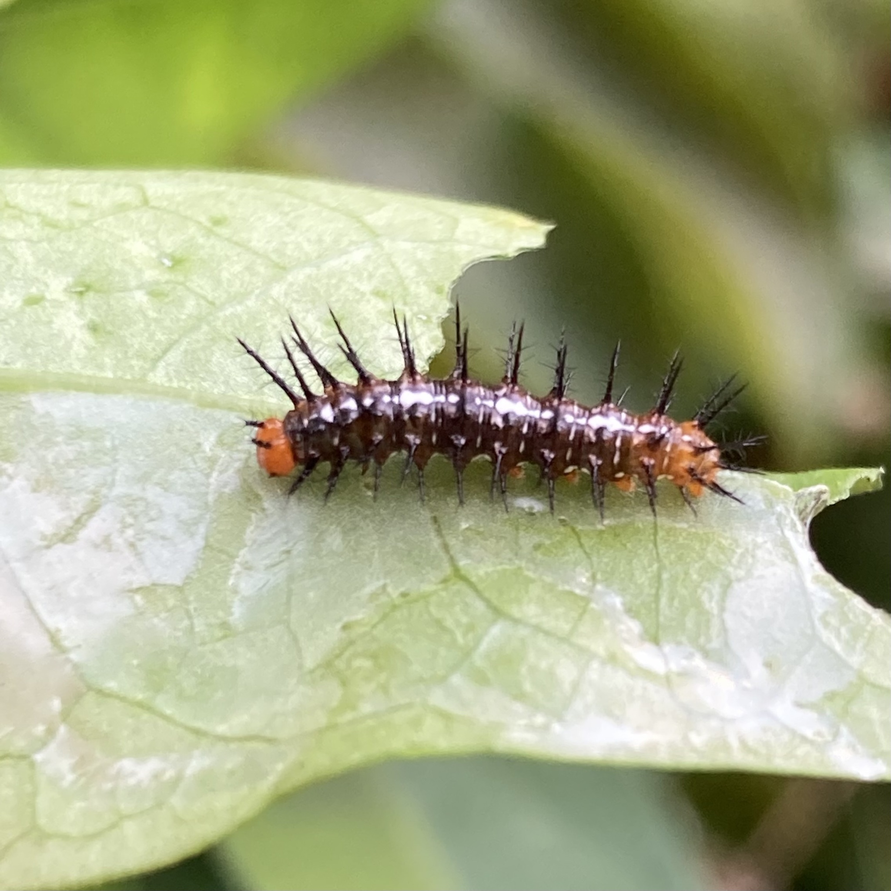

Dryas iulia
PossibleSame passionvine yards as the longwings. Less noisy than Gulf Fritillary this month, but it is a resident. Long narrow orange wings, no silver underneath.

Yards, hammock edges.
Corkystem passionflower
Passiflora suberosasilver below